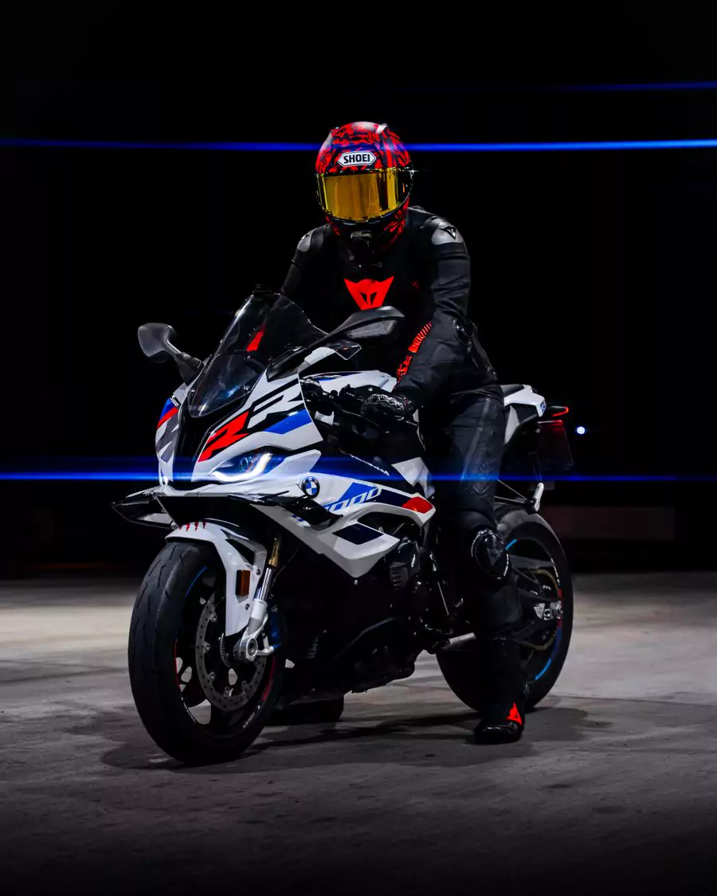
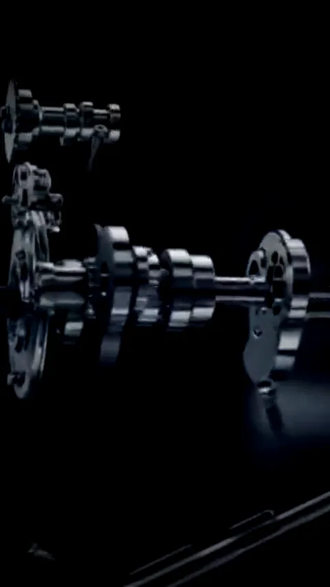
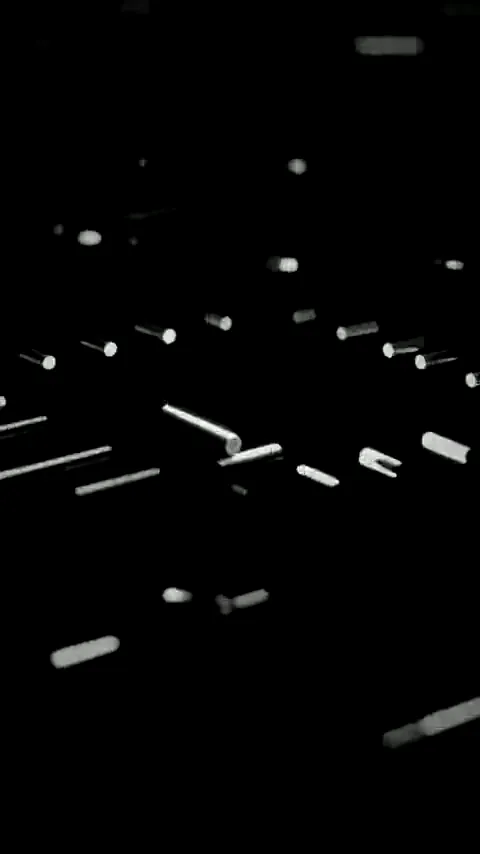
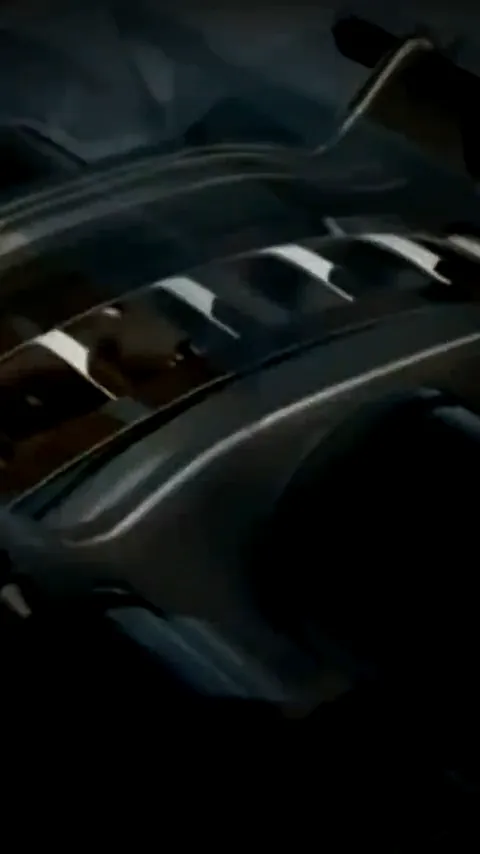
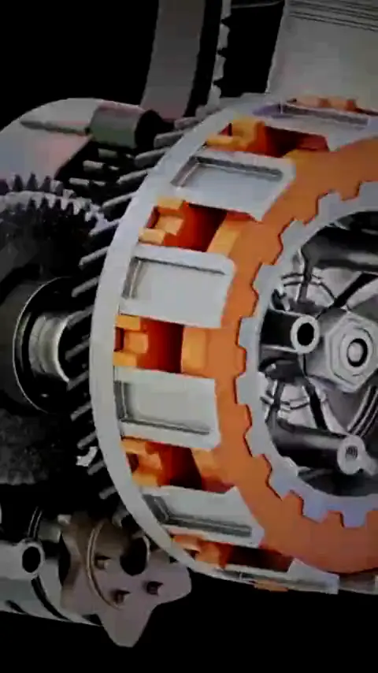
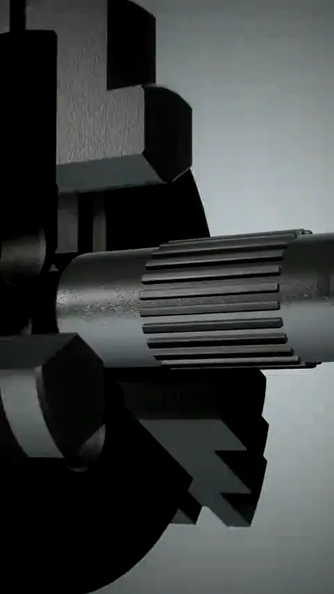
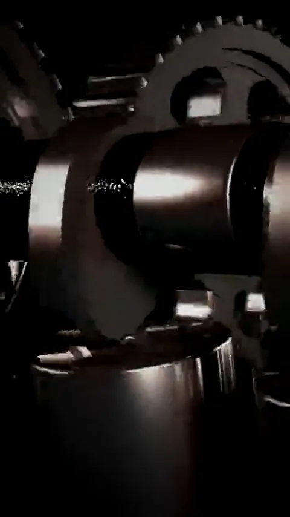
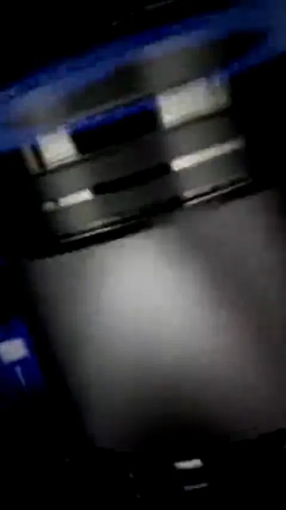
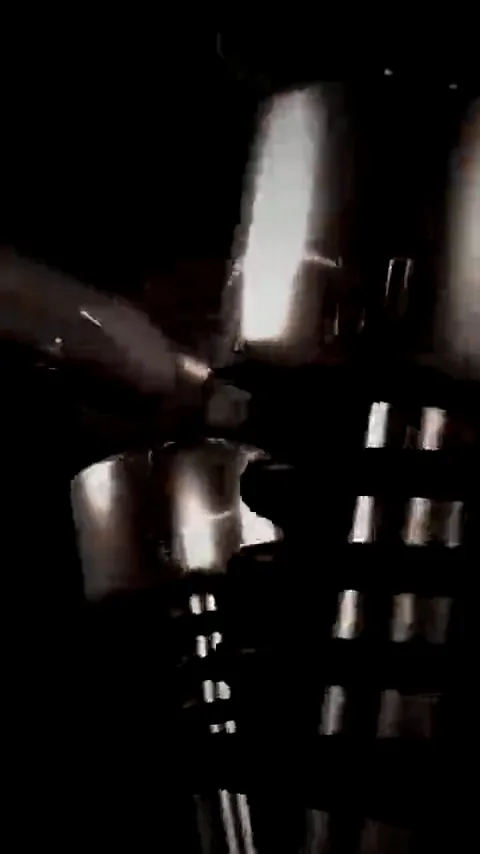

Más de 900 manuales paso a paso de +100 marcas: diagnostica y arregla las fallas más comunes de tu moto en el celular o el PC.
Empezar hoy · US$12.99 →Pago único · Acceso inmediato · Es tuyo para siempre
Compatible con más de 100 marcas
Así la explica tu manual
Eso son 10 piezas de una moto de ejemplo. Un manual de taller trae el mismo despiece de la tuya, con el número de cada parte, el orden de armado y el torque de cada tornillo.
Motor, eléctrico, frenos, suspensión, transmisión y carburación: toca una tarjeta para ver el módulo completo.

Despiece
Diagramas
Frenos y
Transmisión
Carburador
Torques y
Diagnóstico
Curso 2TCada número aquí fue contado archivo por archivo. Lo que ves es lo que hay.
Honda, Yamaha, Suzuki, Kawasaki, Bajaj, AKT, KTM, Ducati, BMW, Royal Enfield, Benelli, TVS, Hero, CF Moto, Italika, Aprilia, Piaggio, Harley-Davidson y las marcas chinas de mayor circulación en LATAM: si tu moto es de trabajo o de uso diario, su manual está adentro.
El curso que ordena todo lo anterior: cómo funciona un motor de 2 tiempos y uno de 4 tiempos, en qué se parecen, en qué no, y qué se hace distinto al desarmarlos. El motor por dentro, con las piezas en movimiento, explicado desde cero.
El checklist va incluido gratis. Los dos packs de abajo se agregan a tu pedido por separado.
Tiempo real para revisar los primeros manuales antes de decidir. Si en 7 días el material no es lo que esperabas, te devolvemos el 100% de tu dinero.